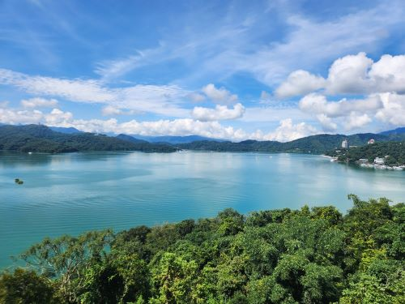
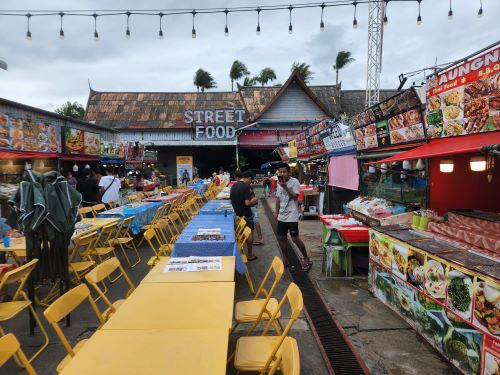
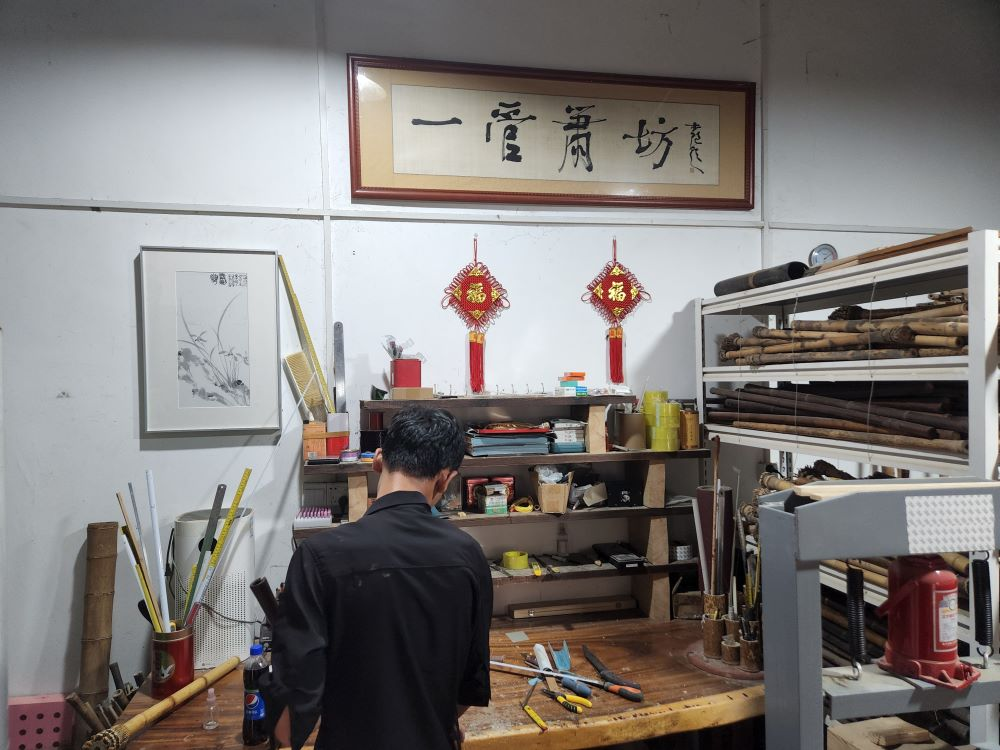
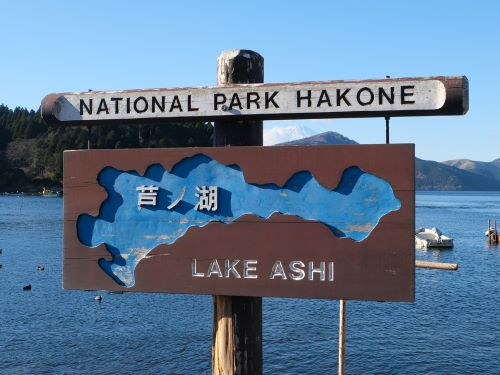
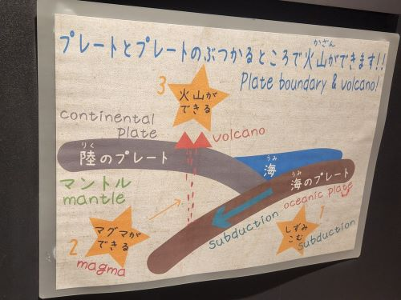

Home
My Travels
Here are some photos from my recent travels.
Click on the attached hyperlinks to learn more!

Sun Moon Lake, Taiwan (2023)

Phuket, Thailand (2023)

Shenzhen, China (2023) **Chinese version only

Lake Ashi, Japan (2022)

Hakone Geo Museum, Japan (2022)
A graphical representation of my recent travels